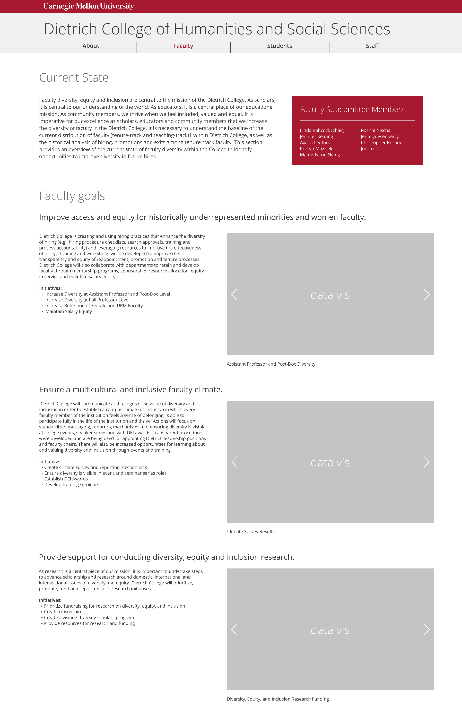
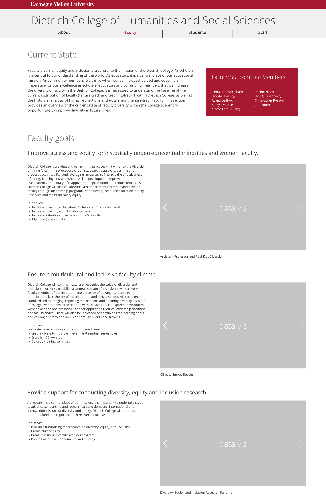
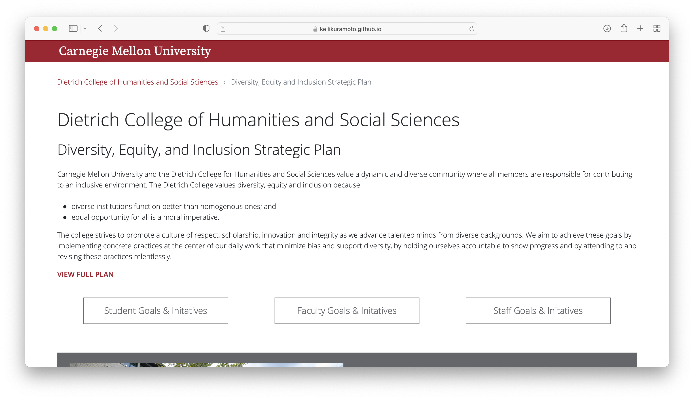

Data driven change at
Dietrich College
My teammates and I were tasked with turning a 60 page long PDF of Dietrich College's Diversity, Equity, and Inclusion (DEI) Strategic Plan into an easily digestible responsive website that (1) tracked and (20 managed the DEI Strategic Plan, while increasing transparency and accountability of Dietrich College.
My role included lead designer and supporting developer.
ROLES
Design
Wireframing
Prototyping
Testing
Web Development
CLIENT
Ayana Ledford,
Director Of Diversity And Inclusion of Dietrich College
TIME
October 2021 -
December 2021
01
Semi-Structured Interviews
Our group started our project by conducting 2 semi structured interviews each, 6 in total, with one of our stakeholders: Student, Staff, or Faculty.
Each interview lasted about 30 minutes and we allowed the participant to explain to knowledge of Dietrich College’s DEI Stratgeic Plan, what type of information they thought would be in the plan, as well as any other information that they would like displayed.
Starting with user research gave our group a strong foundation for our project by understanding the problem space and allowed us to better empathize with our stakeholders.
02
Personas
Based on our initial secondary user research, we created 3 persons to exemplify our target audience:
- Current and Prospective Student
- Current and Prospective Faculty
- Current and Prospective Staff
We provided information regarding their motivations, general interest, goals, tasks, and frustrations.
While designing our initial wireframes we kept our personas in mind, thinking about which information from the DEI strategic plan we wanted to present and how we wanted to present it.


03
Iterative Testing & Design
In order to design the best website given our time constraints, we conducted 2 rounds of user test.
For our first round we conducted an A/B testing between my initial design and my teammates design. My design highlighted a single page, multi dashboard design while my teammates design was multi page, in depth presentation of information.
 

Apart from deciding which design direction to purse, some other feedback we received and implemented included:
- Changed the background color of the dashboard to give a lighter feel to the overall website
- Added headings to the 'Goals' on each dashboard to provide clear feedback for the user
- Added a 'Contact' and 'Additional Resources' section to the bottom of the page based on user research
After all the changes were made, we ran a second round of user testing and our main feedback received was there was possibly not enough information presented. In order to combat that issue, alongside the continue client interest of simplicity and digestibility, we implemented accordions of information for each section in order to allow the user to decide how much information they want to see.
04
How We Met User Needs
| Data Visualizations |
|---|
| Enable users to easily understand the initiative and its corresponding progress that has or hasn't been made, which also serves as a transparency measure for Dietrich College’s |
| 3 Dashboard Design |
|---|
| Allows the stakeholders and target audience to find what they're looking for faster |
| Accordions |
|---|
| Allows users to choose which information they want to see while preserving space in an easily digestible way |
05
Building the Website
The bulk of the coding was completed by my teammate, Adriana Poznanski. She created the HTML code and structure for the dashboards using Bootstrap elements.
I implemented the introduction section at the top with hyperlinks to the dashboard, as wel as the automatic slideshow. We both worked on implementing media queries and using Bootstrap for responsiveness.
06
Final Website

07
Client Feedback
"Design has a serious feeling that matches the purpose of the website, and content is concise and helpful."
We also presented to a group of academic professionals and received some other positive comments as well:
- “Really well done, design is very well thought out and it looks like an official CMU site”
- “This team was very thorough and responsive to the client's needs - well done”
08
Conclusion
This was my first project working on a website for a real client and the entire process was so gratifying. Being able to produce a website that met both the client and user needs was something that I will continually striver for in all of my designs to come.
I loved the topic of this project as well, because I believe in the importance of diversity, equity, and inclusion, and I am grateful to attend a university where this is placed at a high priority among administration.